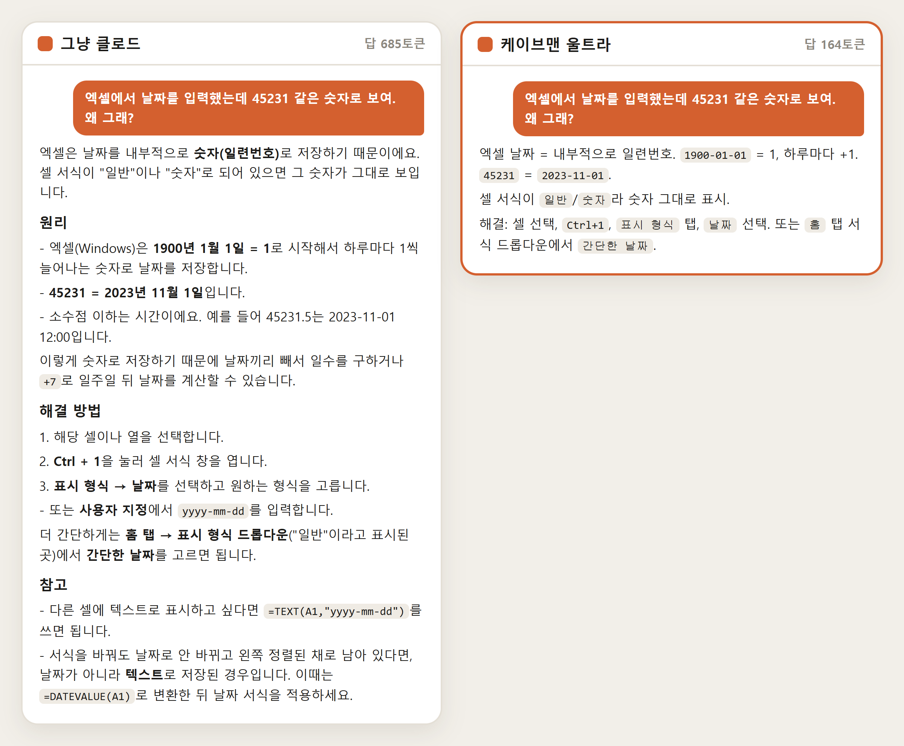
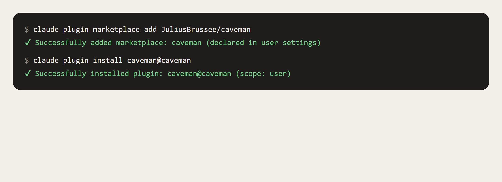
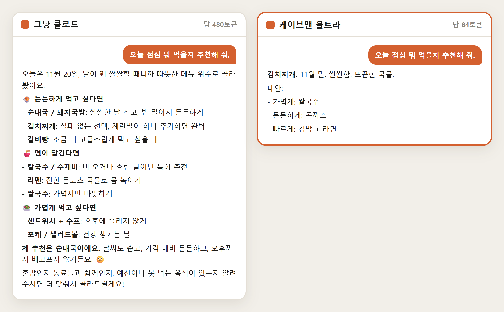
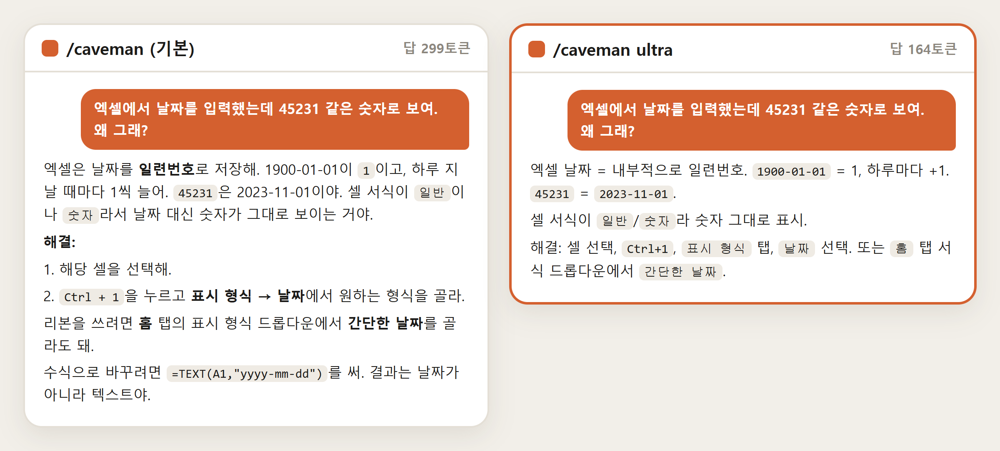
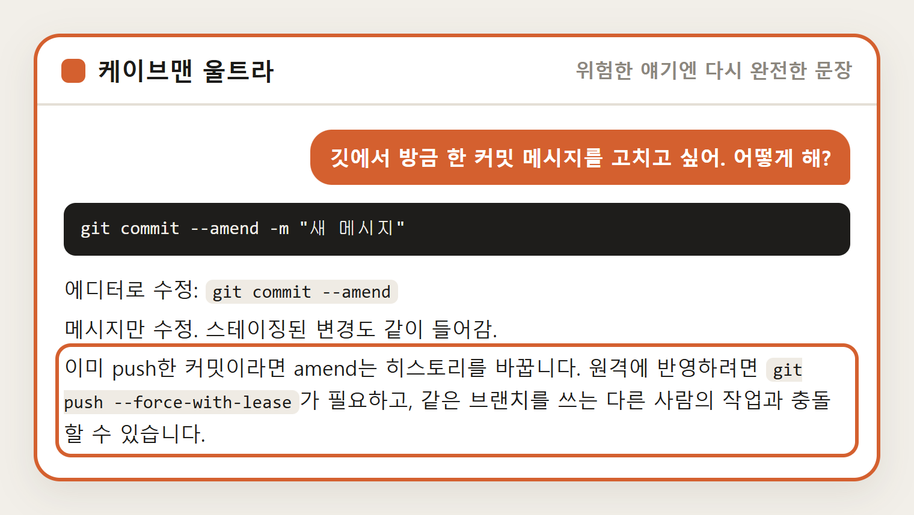

클로드 코드에 까는 무료 플러그인(Apache-2.0)이에요. 깔고 나면 새 세션부터 클로드가 인사·되풀이·덧붙이는 설명을 빼고 답부터 짧게 말해요. 코드·명령어·파일 경로는 한 글자도 안 바꾸고, 되돌릴 수 없는 작업이나 보안 얘기가 나오면 그때만 다시 완전한 문장으로 말해요. 같은 엑셀 질문에 그냥 클로드는 15줄(답 685토큰), 케이브맨 울트라는 3줄(164토큰)이었어요.

터미널에서 아래 두 줄을 차례로 쳐요. 클로드 코드 안이라면 /plugin marketplace add JuliusBrussee/caveman → /plugin install caveman@caveman으로 똑같이 돼요. 윈도에서도 그대로 돼요(직접 확인).

클로드 코드를 새로 켜면 세션 시작과 함께 케이브맨이 자동으로 켜져요(따로 부를 필요 없음). 처음 한 번은 '상태 표시줄 배지를 설정할까요?' 안내가 붙을 수 있는데, 원하면 예, 아니면 무시해도 돼요.
질문은 평소 말투 그대로 하면 돼요. 내 질문은 안 바꾸고 클로드의 답만 짧아져요. 한국어로 물으면 기본 모드는 반말로 짧게("~해. ~야."), 울트라는 명사·기호로 끊어서 답해요.

/caveman ultra 하면 더 짧게, /caveman 하면 기본으로, stop caveman 하면 원래 말투로 돌아가요. /caveman status로 지금 모드를 볼 수 있어요. 한문 문어체로 답하는 /megacave도 있어요.

커밋을 덮어쓰는 것처럼 되돌릴 수 없는 일, 보안 경고, 헷갈려하는 질문 앞에선 다시 완전한 문장으로 말하고 짧은 말투로 돌아가요.

/caveman-commit은 커밋 메시지를 한 줄로, /caveman-review는 코드 리뷰를 한 줄에 하나씩 짚어 줘요.
터미널에서
claude plugin marketplace add JuliusBrussee/caveman
바로 이어서
claude plugin install caveman@caveman
클로드 코드 안에서
/caveman ultra
길게 설명을 듣고 싶을 때
stop caveman
그만 쓸 때
claude plugin uninstall caveman@caveman
도움이 되셨다면
@ai.antenna.kr
에서 바로 쓰는 AI 활용법을 계속 올립니다.